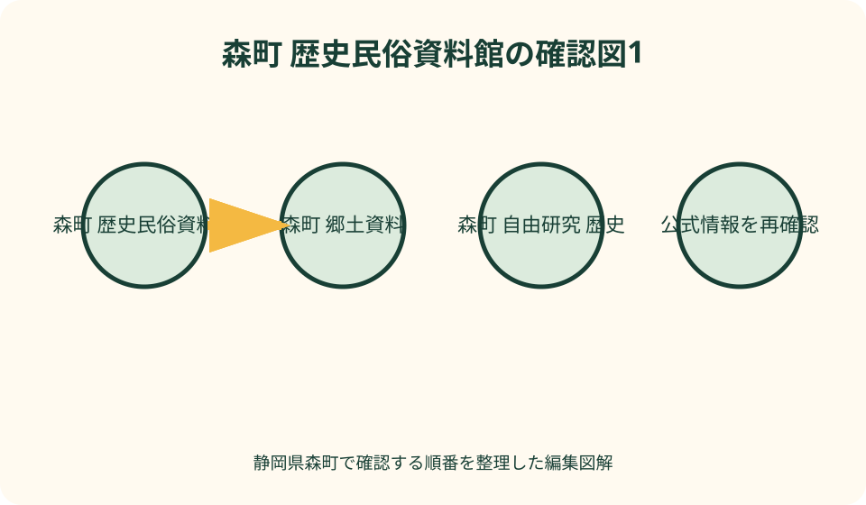
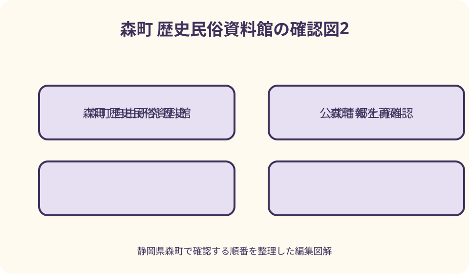

歴史・調べ学習｜最終確認 2026-08-10
静岡県森町の歴史民俗資料館・郷土資料の調べ方｜見学予約から図書館活用まで
実在する施設名は「森町立歴史民俗資料館」で、旧周智郡役所を移築した町指定文化財の建物です。森町公式ページと資料館へ訪問日の開館、見学予約、現在の展示、写真、団体・調査利用を確認し、展示名を一つ選んで質問を作ります。展示されていない収蔵資料を閲覧できるとは考えません。休館時は森町立図書館で郷土資料を相談するか、町公式の図説森町史と略年表を読み、次回に確認したい点を残してください。

編集イラスト最初に確かめる——施設名は森町立歴史民俗資料館
静岡県周智郡森町で訪ねる施設の正式名称は「森町立歴史民俗資料館」です。北海道など同名自治体や他地域の歴史民俗資料館を検索結果から混ぜないため、住所が静岡県周智郡森町森で、森町公式サイトからリンクされる施設かを確認します。
森町の文化財保存活用に関する公式資料は、資料館の建物を明治十八年に建てられた旧周智郡役所とし、昭和四十九年に現在地へ移築、昭和五十四年から歴史民俗資料館として活用していると説明しています。年代を一つの開館年にまとめません。
同資料は、旧周智郡役所を町指定文化財として挙げています。つまり、館内の展示を見るだけでなく建物自体も調査対象になります。ただし、指定部分や改修履歴を見た目だけで判断せず、職員または公式解説へ質問します。
資料館の公式ページは森町の「観光・文化」から辿り、観光協会ページにも住所と連絡先が掲載されています。訪問前は検索結果の抜粋ではなく、町ページ、資料館の発信、電話の順で最新情報を確かめます。
開館と予約を確認する——掲載時間を当日の保証にしない
森町観光協会の施設案内は、資料館を午前九時三十分から午後四時三十分、月曜・火曜と年末年始を休館、入館無料として掲載しています。これは二〇二六年八月十日に確認した掲載内容で、臨時休館や展示替えを保証しません。
森町公式の資料館ページが現在も文化案内からリンクされていますが、見学予約が一律に不要だとは断定しません。個人の通常見学、団体、学校、調査目的、解説希望では対応が異なる可能性があるため、訪問日と目的を電話で伝えます。
予約確認では、希望日、到着時刻、人数、子どもの学年、見たいテーマ、写真撮影、質問の有無を簡潔に伝えます。通常展示を見るだけか、特定資料を調べたいかを区別し、収蔵庫や古文書の閲覧を当日依頼で受けられると期待しません。
荒天、行事、設備点検、職員体制で予定が変わる場合があります。遠方から向かう日は当日にも開館を確認し、電話がつながらなければ開いていると推測しません。図書館またはオンライン調査へ変更できる資料を準備します。
展示を推測しない——収蔵分野と当日見られる資料を分ける
森町公式の文化財保存活用資料は、町内外から寄贈・寄託された古民具、農機具、考古資料、古文書等を資料館が展示すると説明しています。観光協会も農耕具、生活用品、古文書を紹介しますが、全点が常設展示されるとは書かれていません。
展示替え、貸出、保存処置によって見られる資料は変わります。訪問前に現在の展示テーマ、見たい資料名、展示終了日を問い合わせます。「昔の農具が全部ある」「古文書を手に取れる」といった展示内容を記事側で作りません。
収蔵品と展示品も分けます。資料館が保管する資料であっても、温湿度、光、整理状況、寄託条件により公開できない場合があります。収蔵庫への案内や原資料閲覧は、研究目的でも所定の手続が必要かを尋ねます。
当日は入口で展示範囲、撮影、触れてよい体験物、順路を確認します。ラベルが見当たらない資料へ自分で用途名を付けず、質問カードやメモへ「不明」と書き、職員に聞ける時間があれば確認します。

調査質問を一つ作る——時代全体ではなく、道具の変化を追う
資料館へ行く前に、「森町の昔を知りたい」という広い目的を、一つの答えを探せる質問へ変えます。たとえば農具なら、何の作業に使い、誰が扱い、後の道具と何が変わったかという三点に絞ります。
生活用品なら、現在の道具と形を比べるだけでなく、水、燃料、電気、収納など暮らしの条件を一つ選びます。古文書なら全文解読を目標にせず、年代、作成者、宛先、資料名のラベルから、何を記録した文書かを確かめます。
考古資料は、出土地、時代、材質、用途の説明を読みます。展示品の形から祭祀用、農作業用と勝手に推定せず、発掘地点や年代をラベルどおり記録します。疑問は「なぜそう判断できるか」と根拠に向けます。
建物を題材にするなら、旧周智郡役所として建てられ、移築後に資料館へ転用された経過を軸にします。外観の洋風らしさを感想だけで終えず、元の用途、移築年、現在の使われ方を公式資料で結びます。
展示ラベルを読む——名称、年代、用途、入手経緯を別々に写す
展示を見るときは、資料名、年代、材質、用途、寄贈・寄託などの入手経緯を、ラベルにある範囲で別欄へ写します。記載がない項目を空想で埋めず、「表示なし」と書けば追加質問が明確になります。
古民具の呼び名には地域語や漢字表記の違いがある可能性があります。読み方が分からなければラベルを正確に転記し、職員へ尋ねます。現代の似た道具名へ置き換える前に、森町での呼称か一般名称かを確認します。
展示解説の文章を丸ごとノートへ写すより、自分の質問に関係する語を選び、出典として展示名と見学日を残します。後で図説町史や図書館資料と照合するとき、どの説明を現地で読んだか分かります。
ラベルが更新されている場合は、古いウェブ記事の名称より現地の最新表示を優先し、違いを職員へ質問します。誤植だと決めつけず、資料整理や研究の進展で表記が変わった可能性も含めて確認します。
写真撮影を確認する——展示室、建物、資料ごとの条件を聞く
資料館での写真は、館内一律に撮影できると考えません。展示室、建物外観、個別資料、企画展で条件が異なる可能性があります。受付で個人記録か学校提出かウェブ掲載かを伝え、フラッシュ、三脚、動画も別に確認します。
古文書や写真資料には、著作権、寄託条件、個人情報、保存上の理由で撮影制限があり得ます。ガラス越しに撮れるから許可済みとは考えず、撮影不可なら資料名とラベルを手書きします。無断で画面録画もしません。
撮影可能でも、他の来館者、職員、名札、受付書類が写らない構図を選びます。通路で立ち止まり続けず、機材を床へ広げません。子どもが撮る場合も、保護者が展示ケースとの距離と周囲を確認します。
自由研究へ写真を貼るときは、撮影日、資料館名、資料名、撮影許可の範囲を記します。SNSへ同じ写真を公開できるとは限らないので、提出物以外への利用は再確認します。許可が不明なら自分のスケッチを使います。

職員への質問を整える——展示で確認できなかった点だけを聞く
質問は、展示ラベルと公式ページを読んでも分からなかった点に絞ります。「森町の歴史を全部教えてください」ではなく、「この農具は町内のどの作業で使われましたか」のように、資料名と知りたい項目を添えます。
来館直後に長時間の解説を求めず、質問できる時間があるか受付で尋ねます。団体対応、資料整理、他の来館者への案内が優先される場合があります。回答をもらえなければ、調べる資料名や担当窓口だけ教えてもらえるか聞きます。
職員の説明は、日時、話者の所属、質問、回答をノートへ分けます。録音する場合は事前に許可を得ます。聞き取れなかった年代や固有名詞を推測で補わず、復唱するか、後で公式資料と照合します。
寄贈者や個人に関する情報は、研究に関係しても回答できないことがあります。理由を追及せず、公開済み資料で確認できる範囲へ質問を変えます。職員の口頭回答を許可なく実名付きの引用として公開しません。
古文書・郷土資料を調べる——展示閲覧と原資料利用を混同しない
展示ケース内の古文書を見ることと、原資料を机上で閲覧することは別です。特定文書を研究したい場合は、資料名、目的、希望日、必要な範囲を事前に伝え、閲覧制度、申請、複写、筆記具の条件を確認します。
原資料の閲覧ができない場合は、翻刻、目録、写真版、町史への掲載があるかを尋ねます。原本だけを価値ある資料と考えず、保存のために作られた複製や刊行物から調査を始めます。
郷土資料は資料館だけでなく、森町立図書館にも収蔵されると町の公式資料が説明しています。資料館で展示の背景を知り、図書館で町史や刊行物を読むという役割分担をすると、一日で原資料閲覧を求めずに済みます。
古文書の文字を読めない場合は、年代、差出人、宛先、文書の種類という書誌情報から始めます。翻刻がなければ自動文字認識の結果を確定文として使わず、専門家や資料館が示す読みを待ちます。
図説森町史を予習に使う——古い情報と現在の施設案内を分ける
森町公式は「図説森町史」をオンライン公開し、自然、考古、古代、中世、近世、産業、民俗、建築、文化財まで章ごとに読めるようにしています。訪問前に自分の質問へ近い章を一つ選び、固有名詞を控えます。
町は、図説森町史が平成十一年二月発行時の情報を用い、現在と異なる場合があると明記しています。歴史解説の予習には使えますが、資料館の現在の展示、開館、道路、連絡先を同書だけで決めません。
農具や生活用品なら「生業」「衣・食・住」、町の産業なら「森町の産業」、建物なら「森町の民家」など目次から候補を探します。章全体を要約するより、展示で確かめたい語を三つ抜き出します。
見学後は、展示ラベル、職員の説明、図説町史の記述を三段に並べます。内容が違う場合は、新旧の研究や展示意図の差かもしれないため、自分でどちらかを誤りと決めず、資料館または文化振興係へ確認します。
森町立図書館を使う——館内閲覧と館外貸出の条件を分ける
森町立図書館は、二〇二六年五月八日更新の町公式案内で、誰でも利用できるとされています。一方、館外貸出は原則として森町在住・在勤・在学者が対象です。町外からの調査は館内閲覧を基本に計画します。
同案内の開館時間は九時から十七時、水曜日は十九時までです。休館は月曜日、月曜が祝日の場合の翌日、年末年始、特別整理日とされています。二〇二六年八月十日以後の臨時変更は図書館へ再確認します。
蔵書検索では、森町史、図説森町史、周智郡、秋葉街道、農具、民俗、学校史など、自分の質問から二、三語を試します。検索結果に出ない郷土資料もあり得るため、書名が分からない場合はカウンターへテーマと年代を伝えます。
郷土資料に複写や撮影の制限がある場合は、著作権と資料保存の案内に従います。貸出不可でも館内で読める可能性があり、逆もあります。利用者カードを作れないことを、資料を閲覧できないことと同一視しません。
子どもの自由研究を作る——展示三点と一つの変化に絞る
小学生の自由研究は、「昔と今の暮らし全部」ではなく、水を運ぶ、米を作る、明かりを取るなど一つの行動を選びます。展示から関係する道具を最大三点選び、名称、年代、用途、現在の道具との違いを書きます。
低学年は、形をよく見てスケッチし、どこを持つか、何でできているか、どのくらいの大きさかをラベルの範囲で記録します。重さや使い方を触って確かめず、触れる展示か職員へ確認します。
高学年は、道具が変わったことで作業時間、人数、燃料、保管がどう変わったかを質問にします。展示だけで答えが出なければ、図説町史や図書館の郷土資料へ進み、出典を二つ以上にします。
まとめは、予想、資料館で分かったこと、図書館やウェブで補ったこと、残った疑問の四欄にします。「昔は大変だった」と感想だけで終えず、どの資料のどの説明から考えたかを書きます。
建物を教材にする——旧役所から資料館への用途変化を追う
資料館の建物は、展示を収める箱ではなく、旧周智郡役所として建てられた町指定文化財です。建築年、移築年、資料館として使い始めた年を別々に年表へ置き、建物の役割がどう変わったかを調べます。
外観では窓、玄関、屋根、左右の構成などを、許可された場所から観察します。洋風、和風という印象を即座に分類せず、図説町史の「森町の民家」や資料館解説に、どの特徴が説明されるかを確認します。
館内では床、階段、展示ケースの位置を撮影前に確認し、移築当初からある部分と資料館設備を見た目で分けません。改修や耐震、空調について知りたい場合は、公開資料があるか職員へ質問します。
自由研究では、郡役所であった時代の利用、移築、資料館への転用という三段階を一枚の図にします。そこで働いた人物や業務を資料なしに想像せず、町史、略年表、施設解説で確認できる事実だけを置きます。
雨天の学びを整える——屋内でも交通と濡れた荷物へ配慮する
資料館は屋内施設ですが、雨天に自動的な代案になるわけではありません。道路、公共交通、警報、臨時休館を確認し、強雨や雷では移動自体を中止します。開館していても安全な到着経路を優先します。
濡れた傘、上着、鞄を展示室へ持ち込む方法は受付で尋ねます。資料館の古い建物や展示ケースへ水滴を付けず、傘を壁に立て掛けません。床が滑る場合は子どもを走らせず、見学範囲を短くします。
雨天は、展示一室と質問一つに絞り、屋外の町歩きや蓮華寺への立ち寄りを別日にします。閉館時刻ぎりぎりに到着せず、濡れた荷物を整え、受付確認、見学、メモの時間を確保します。
移動を中止した日は、図説森町史の一章を読み、オンライン略年表へ年代を追加します。資料館のSNSや町のお知らせに企画展情報があれば、開催年と終了日を確認します。画面で見た展示を現地見学として書きません。
休館時に切り替える——図書館、図説町史、略年表を順に使う
資料館が休館なら、同じ展示を別施設で見られると期待せず、調査方法を変えます。まず森町立図書館の開館を確認し、郷土資料コーナーや蔵書検索で質問に関係する町史、産業史、学校史を探します。
図書館も休館なら、森町公式の図説町史を目次から読みます。年代を追いたい場合は、安土桃山以前、江戸、明治以後に分かれた町公式の関係略年表を併用し、出来事の前後を確かめます。
オンライン資料に答えがなければ、文化振興係または資料館へ次の開館日に質問する内容を整理します。資料名、調べたページ、分からなかった語をメールや電話で伝えられる形にし、漠然と資料送付を求めません。
休館日を利用して、展示で撮りたい写真、職員へ聞く質問、図書館で探す語を一枚にまとめます。次回訪問で同じ検索を繰り返さず、現地でしか確認できない展示状態や建物の観察へ時間を使います。
調査結果をまとめる——現地、刊行物、ウェブを色分けする
調査ノートは、資料館で見た展示、図書館で読んだ刊行物、森町公式ウェブの三種類に色を分けます。どこで得た情報かが分かれば、展示替えやページ更新があっても、確認日と出典を追えます。
展示の出典は、施設名、展示名または資料名、見学日を記します。図書は著者、書名、発行者、発行年、参照頁、ウェブはページ名、発信者、URL、確認日を残します。写真番号とノートの資料名も対応させます。
職員から聞いた内容は、公開資料と同じ確定情報として混ぜず、「質問への回答」として記録します。公開物へ引用する場合は、氏名や発言を出してよいか確認します。許可がなければ要点を自分の調査メモに留めます。
結論には、質問への答え、根拠となる二つ以上の資料、まだ不明な点を書きます。分からないことを無理に埋めず、次に見たい展示や読む本を示せば、資料館見学が一回限りの感想文ではなく継続調査になります。
良い点——建物、展示、町史、図書館を一つの問いで結べる
森町立歴史民俗資料館を使う良い点は、旧周智郡役所という建物、暮らしや産業を伝える資料、町の歴史解説を同じ問いから調べられることです。展示を見るだけでなく、資料が保存される場所の歴史も教材になります。
農具、生活用品、考古資料、古文書という公式に示された分野から、一つを選んで深められます。展示されていない資料があっても、目録、図説町史、図書館資料へ進むことで、見えない部分を想像で補わず調査できます。
森町立図書館は町外の人も館内利用できると公式案内にあり、資料館と役割を分けられます。現物の形やラベルは資料館、背景や年代は図書館という往復が、短い見学を読み応えのある調査へ変えます。
子どもの自由研究でも、展示三点、質問一つ、出典二つという小さな枠を作れます。大量の写真を集めるより、職員へ一問を準備し、分かったことと残った疑問を分ける方が、自分で調べた過程を示せます。
注文したい点——開館・予約・展示・写真・資料利用を事前に聞く
注文したい点の第一は、訪問日の開館と最終入館の扱いです。観光協会の掲載時間を確認したうえで、資料館の最新発信または電話で臨時休館、展示替え、団体対応を尋ねます。閉館時刻から逆算して余裕を持ちます。
第二は、予約の要否です。個人見学、団体、学校授業、解説希望、特定資料の調査では条件が異なる可能性があります。人数、学年、目的、希望時間を伝え、予約完了の方法と当日の受付を確認します。
第三は、現在見られる展示と写真です。目当ての資料名、企画展期間、撮影可否、フラッシュ、三脚、学校提出やウェブ利用を分けて聞きます。撮影不可でもメモやスケッチが可能か確認します。
第四は、郷土資料や原資料の利用です。展示外資料、古文書、複写、目録を利用したい場合は、申請、日数、筆記具、費用を尋ねます。当日対応を要求せず、図書館の刊行物やオンライン資料で代替できるかも相談します。
対案・結論——展示一つ、質問一つ、補助資料二つで調べる
結論として、資料館では展示分野を一つ選び、名称、年代、用途から質問を一つ作ります。訪問前に開館、予約、展示、写真を確認し、当日はラベルを正確に記録します。見られない収蔵品をあるものとして予定しません。
見学後は、森町公式の図説町史から関係章を一つ、森町立図書館から郷土資料を一冊探します。展示、ウェブ、図書の三つを比べ、同じ内容のコピーではなく、それぞれが補う情報を整理します。
子どもの自由研究なら、道具三点まで、現在との変化一つ、職員への質問一つにします。撮影できない場合はスケッチを使い、出典と確認日を付けます。答えが分からない欄も、そのまま次の調査課題にします。
雨天、休館、展示替えなら、図書館またはデジタルの図説町史と略年表へ切り替えます。現地へ行けなかったことを隠さず、資料調査の日と記録します。次の開館日に現物で確かめる順番を残します。
大石の視点——資料館では答えより、確かめられる問いを持ち帰る
私が森町立歴史民俗資料館へ行くなら、まず図説町史の目次を読み、農具か旧郡役所のどちらか一つに絞ります。知識を披露するためではなく、展示を見なければ答えにくい質問を一枚の紙へ書きます。
館内では写真の枚数より、ラベルの正式名称と不明な欄を大切にします。用途が分からない道具を見ても、似ている現代品の名前を付けません。職員へ聞けなければ空白を残し、図書館で調べます。
古文書や収蔵品を見られないと言われても、調査が止まったとは考えません。保存のために公開できない資料があること自体を理解し、翻刻、目録、町史という利用可能な形を探します。見る権利より資料の継承を優先します。
帰宅後は、分かったことを一文、根拠を二つ、次の疑問を一つ書きます。建物、展示、町史、図書館が一本の問いでつながれば、短い見学でも森町の暮らしを丁寧に追えます。その問いを持ち帰ることが資料館利用の成果です。
公式情報・確認先
掲載内容は次の一次情報を基礎に整理しました。営業、料金、催し、交通は変わるため、出発前または手続き前にリンク先で最新情報を確認してください。
- 森町立歴史民俗資料館（静岡県森町、2026-08-10確認）
- 図説森町史（静岡県森町、2026-08-10確認）
- 文化財（静岡県森町、2026-08-10確認）
- 森町の民家（静岡県森町、2026-08-10確認）
- 森町立図書館 施設案内（静岡県森町、2026-08-10確認）
- 森町立図書館 設備案内（静岡県森町、2026-08-10確認）
- 観光・文化（静岡県森町、2026-08-10確認）
- 観光パンフレット（静岡県森町、2026-08-10確認）
- 歴史民俗資料館（森町観光協会、2026-08-10確認）
- 森町の歴史文化に触れる旅（森町観光協会、2026-08-10確認）